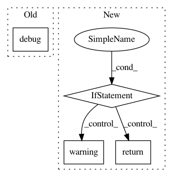

c4d653ee7275f364b82d539bc58a9793248374eb,lib/streamlit/ScriptRunner.py,ScriptRunner,request_rerun,#ScriptRunner#,88
Before Change
// we"re already starting up
return
elif self.is_fully_stopped():
LOGGER.debug("Spawning script thread...")
self._set_state(State.STARTING_THREAD)
script_thread = threading.Thread(
target=self._run,
After Change
If the script is not already running, it will be started immediately.
Otherwise, a rerun will be requested.
if self.is_shutdown():
LOGGER.warning("Discarding RERUN event after shutdown")
return
self._event_queue.enqueue(ScriptEvent.RERUN, self._report)
def request_stop(self):
if self.is_shutdown():
In pattern: SUPERPATTERN
Frequency: 3
Non-data size: 4
Instances
Project Name: streamlit/streamlit
Commit Name: c4d653ee7275f364b82d539bc58a9793248374eb
Time: 2019-06-05
Author: tconkling@gmail.com
File Name: lib/streamlit/ScriptRunner.py
Class Name: ScriptRunner
Method Name: request_rerun
Project Name: streamlit/streamlit
Commit Name: c786913462decebc4157ac3e8d2ec08303021adc
Time: 2018-07-02
Author: adrien.g.treuille@gmail.com
File Name: lib/streamlit/config.py
Class Name:
Method Name: get_s3_option
Project Name: streamlit/streamlit
Commit Name: cf2e5c02c448c6f25136a4cd1b89e7f0ba1a3d37
Time: 2018-07-06
Author: adrien.g.treuille@gmail.com
File Name: lib/streamlit/config.py
Class Name:
Method Name: get_s3_option